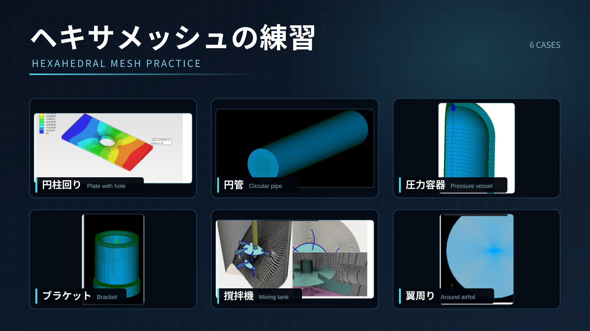
撹拌機形状を題材に、Shaperで断面形状を作成し、Geometryで回転・押し出し・分割を行い、Meshでヘキサメッシュを作成する。
ヘキサメッシュを作成するには、形状を六面体として扱えるブロックに分割し、各ブロックで対向する辺同士の分割数を一致させる必要がある。複雑な形状も、回転・押し出し・Partitionを使って適切なブロックへ分けることで、すべての領域をヘキサメッシュで作成できる。この演習では、撹拌槽と羽根まわりの形状をブロックに分け、方向別の分割数を設定する考え方を扱う。
この撹拌槽モデルは、オープンCAEサマースクール2020
Track3で扱った題材でもある。2020年の演習では、blockMesh
で扇形の6ブロックを作成し、stitchMesh
で貼り合わせ、mergeMesh
で組み合わせることで、羽根付きの撹拌槽形状をヘキサメッシュとして作り上げていた。
この2020年の手法（blockMesh・stitchMesh・mergeMesh）は、技術書典で販売されている技術書「OpenFOAMでメッシュ作成」にも解説されている。

今回の演習では、同じ撹拌槽形状を題材にしつつ、blockMesh
手組みではなく SALOME
でジオメトリとメッシュを作成する方法を扱う。
今回の演習のゴールは、下図のように、羽根形状を含む1/6セクター（60°）分の撹拌槽形状に対して、SALOMEでヘキサメッシュを作成することである。

さらに余裕がある人向けに、作成したメッシュをOpenFOAMに渡して、羽根を曲げる変形テストと、セクターメッシュを回転コピー・結合した全周（360°）フルモデルの組み立てまで行う（章の後半で解説）。
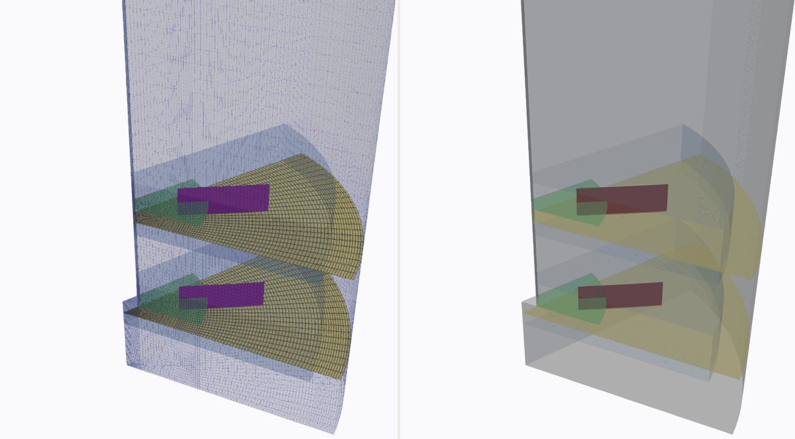
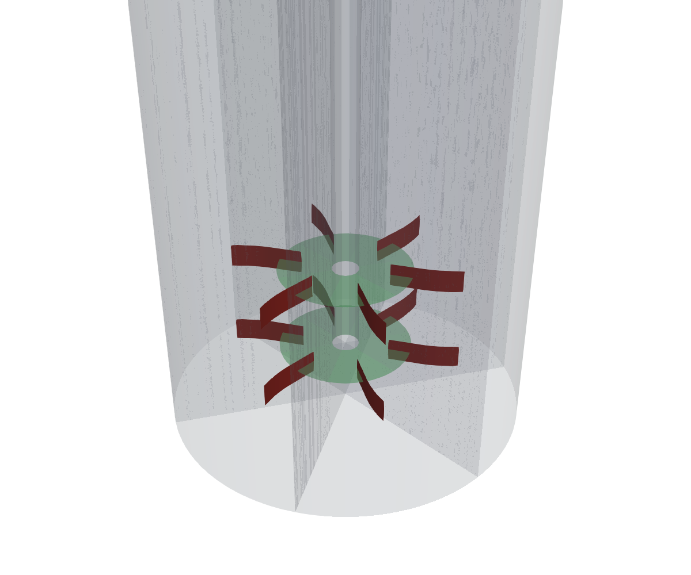
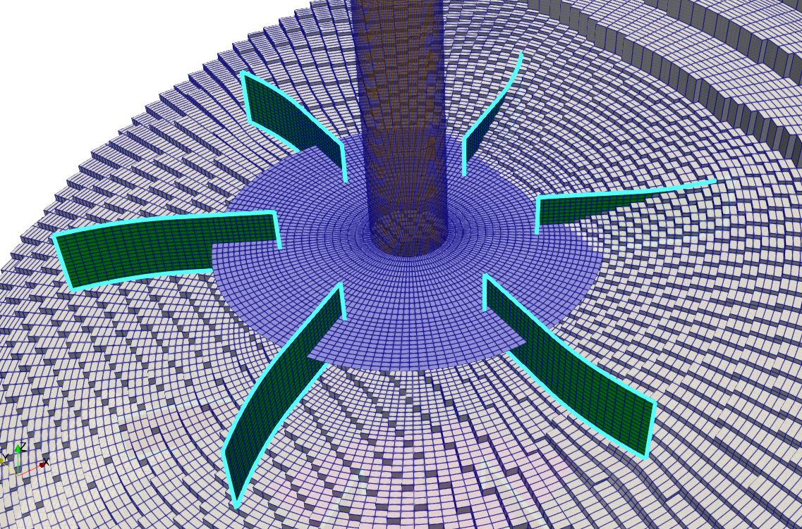
この演習で使うファイル・計算結果は、リポジトリの以下のフォルダにある。
| フォルダ | 内容 |
|---|---|
data/002_Stirrer/sample/mesh/mesh_of13 |
SALOMEから出力した Mesh_1.unv
と、UNV変換・topoSet・createBaffles を行うOpenFOAMケース（OpenFOAM
13） |
data/002_Stirrer/sample/mesh/mesh_of2512 |
同上のESI版OpenFOAM（v2512）ケース |
data/002_Stirrer/sample/mesh/master_curve_of13 |
羽根の可動化テスト（moveDynamicMesh）用のOpenFOAMケース（OpenFOAM 13） |
data/002_Stirrer/sample/mesh/master_curve_of2512 |
同上のESI版OpenFOAM（v2512）ケース |
data/002_Stirrer/sample/mesh/fullmodel_of13 |
変形済みセクターを回転コピー・結合して全周（360°）フルモデルを組み立てるOpenFOAMケース（OpenFOAM 13） |
data/002_Stirrer/sample/mesh/fullmodel_of2512 |
同上のESI版OpenFOAM（v2512）ケース |
この撹拌槽の形状は、向きの違う2つの平面にスケッチを描き、それぞれ別の方法で立体化することで作る。下図がその全体像である。
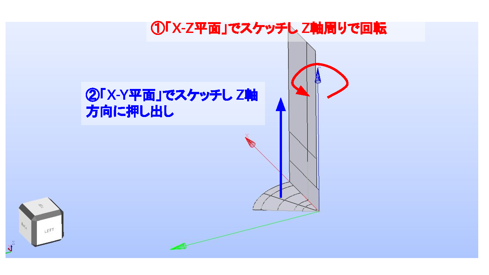
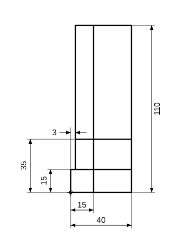
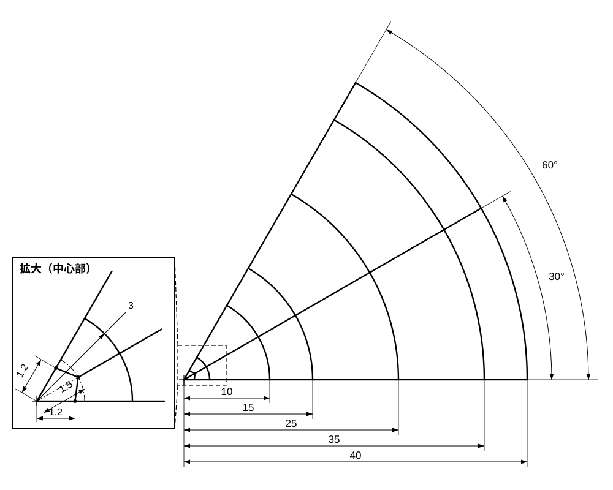
このように「回転で作る部分」と「押し出しで作る部分」を組み合わせ、最後にPartitionで分割してヘキサメッシュ用のブロック形状に仕上げていく。以降の手順では、この2つのスケッチを順に作成していく。
まず1つ目のスケッチとして、下図のような撹拌槽の壁の断面（X-Z平面）を描く。高さ110mm・幅40mmを基準に、内側の仕切り（幅3mm）や段（高さ15mm・35mm）を寸法拘束で決めていく。これをZ軸まわりに回転させると、槽の外周壁になる。
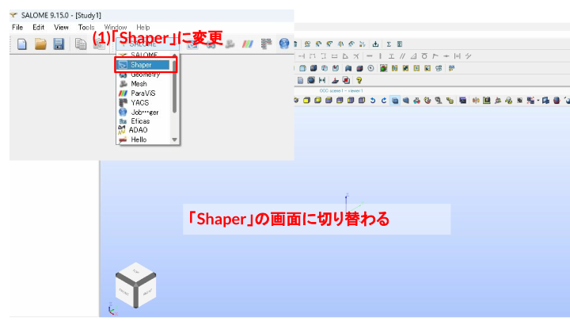
Shaper に変更し、Shaper
の画面へ切り替える。
Sketch をクリックする。Z-X 平面を選択する。
FRONT をクリックし、スケッチしやすい向きにする。
線 を使い、まずは大まかな形状を描く。


線
をクリックして、追加のスケッチと寸法拘束を行う。
2つ目のスケッチは、上から見た（X-Y平面）扇形の断面である。下図のように、中心から半径
10 / 15 / 25 / 35 / 40 mm の円弧で領域を分け、全体を
60° の扇形とする。30°
の二等分線が羽根の位置になる。中心付近は羽根の根本にあたるため、拡大図のように
1.2 / 1.5 / 3 mm
の細かい寸法で形を整える。
この扇形をZ軸方向に押し出すことで、槽の底や羽根まわりのブロックを作る。円弧で分けた半径方向の区切りは、後でヘキサメッシュのブロック境界（サブメッシュの
r1〜r6 など）として使う。

Sketch をクリックする。X-Y 平面を選択する。
TOP をクリックして、上面からスケッチする。
線 をクリックし、原点から右方向へ線を描く。

Coincident
で端点を一致拘束する。


File > Save As... で名前を付けて保存する。Save をクリックする。ここで描いているのは、先ほどのX-Y平面スケッチ（追加断面のスケッチ
の図）の中心付近の拡大部分にあたる。拡大図の
1.2 / 1.5 / 3 mm
の寸法で示された、羽根の根本まわりの細かい円弧と補助線を作り込んでいく作業である。
作業は一度で終わらせなくてよい。スケッチを閉じたあとで描き足したり直したりする場合は、Object
browserのスケッチ（Sketch_1、Sketch_2
など）を右クリックし、Edit を選ぶと続きから編集できる。
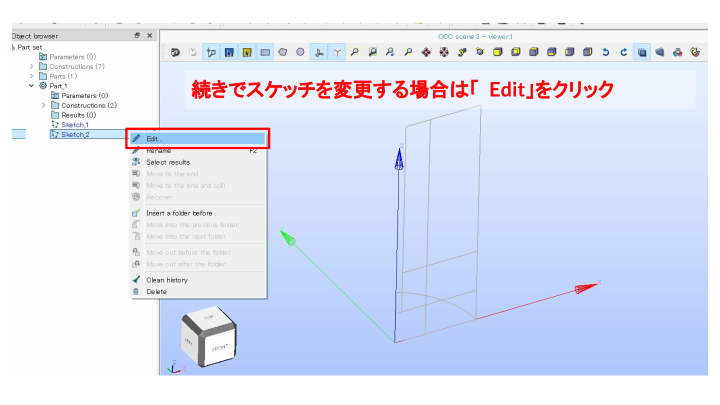


1.5 の線をクリックし、Auxiliary
にチェックを入れる。
線 をクリックして追加スケッチを描く。

線 で細部をスケッチする。


Auxiliary にチェックを入れる。

Shell をクリックし、Sketch_1
を選択する。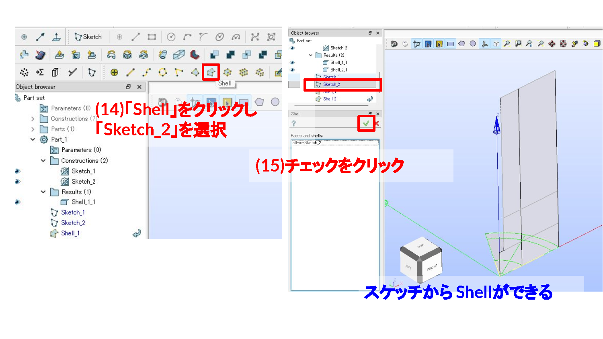
Shell をクリックし、Sketch_2
を選択する。Shell_2
を作成する。
Export to GEOM
をクリックし、Geometryへエクスポートする。
File > Save As... で名前を付けて保存する。Save をクリックする。
Geometry に変更し、Geometry画面へ切り替える。
Hide All をクリックする。Shell_1 と Shell_2 を表示する。
Create an origin and base Vector
をクリックし、軸を表示する。
Revolution をクリックする。Apply and Close をクリックする。
Extrusion をクリックする。Apply and Close をクリックする。

Partition をクリックする。Apply and Close をクリックする。
ここで、Shaperのスケッチに入れ忘れていた分割線を追加する。
本来は Shaper側でスケッチを修正する方が、パラメトリックに（寸法や履歴をたどって）変更でき便利である。ただしここでは、Geometry側で直接修正することもできるということを体験するために、あえてGeometry上で分割線（分割面）を入れてみる。以下の手順で、後からブロック分割を足していく。

Apply and Close をクリックする。
Face_1 を平行移動する。Dz = 10 として Apply をクリックする。Dz = 20、(18) Dz = 30、(20)
Dz = 40 として分割面を複製する。Apply and Close をクリックする。
Partition をクリックし、Objectsに
Partition_1、Tool
Objectsに平行移動で作った4枚の分割面（Translation_1〜Translation_4）を指定する（画像内の説明文は
Extrusion
になっているが、実際に開いているのはPartitionのダイアログ）。Apply and Close
をクリックする。Partition_2 が作成される。
Partition_2
により、z=10〜40mmの4枚の面の位置で形状が水平方向に分割されたことを確認する。
Operations > Blocks > Propagate
をクリックする。Apply and Close をクリックする。
File > Save As... で名前を付けて保存する。Save をクリックする。OpenFOAMへ渡す面や線を整理するため、Geometry側でグループを作成する。境界条件に使う面、メッシュ分割に使う線を分かりやすい名前にしておく。
ここでは、Propagateで作られた
Compound_1〜Compound_15（方向ごとの辺の集まり）を
Union Groups
でまとめ、後のサブメッシュ設定で使う線グループを作成する。作成する線グループは以下の11個。
| 線グループ | 方向 |
|---|---|
z1 / z2 / z3 |
軸（z）方向。高さ位置ごとの辺 |
z_rotor |
軸（z）方向のうち回転領域まわりの辺 |
theta1 |
周方向の辺 |
r1〜r6 |
半径方向の辺 |

New Entity > Group > Union Groups
をクリックする。z1 とし、対象のCompoundを選んで
Apply をクリックする。
z2 として Apply
をクリックする。
z3 として Apply
をクリックする。
z_rotor
とし、回転領域まわりの4つのCompoundを選んで Apply
をクリックする。
theta1 とし、周方向の2つのCompoundを選んで
Apply をクリックする。
r1 として Apply
をクリックする。
r2 として Apply
をクリックする。
r3 として Apply
をクリックする。
r4 として Apply
をクリックする。
r5 として Apply
をクリックする。
r6 として Apply
をクリックする。
z1 / z2 / z3 /
z_rotor / theta1 /
r1〜r6
の11個の線グループが並んでいることを確認する。

File > Save As... で名前を付けて保存する。Save をクリックする。ヘキサメッシュはテトラメッシュのように「どんな形状にも自動で貼れる」ものではない。Hexahedron (i,j,k)
アルゴリズムでヘキサメッシュを貼るには、形状があらかじめ「6面体ブロックの集まり」に分割されている必要がある。ここまでの手順で、回転・押し出しで作った形状を
Partition
で細かく分割してきたのは、まさにこの「ブロックの集まり」を作るためである。
ブロック分割のポイントは次の2つ。
r・周方向 theta・軸方向
z）をそれぞれ線グループにまとめ、グループ単位で分割数を指定する（次節のサブメッシュ）。この「ブロックに分ける → 方向ごとに辺をグループ化する → グループごとに分割数を決める」という流れが、ヘキサメッシュ作成の基本の考え方である。
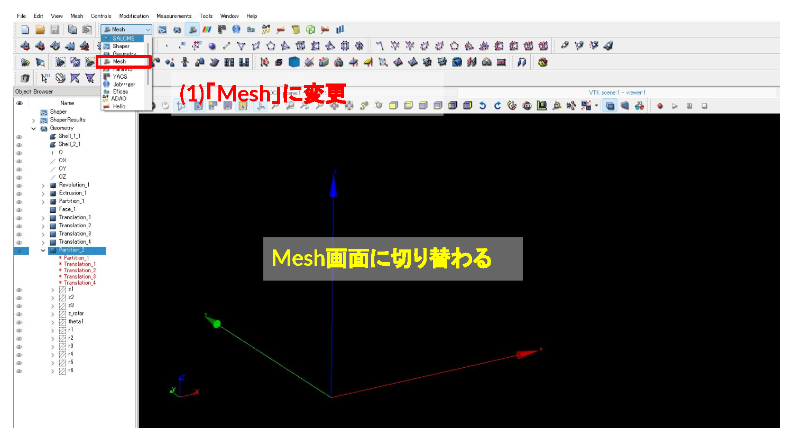
Mesh に変更し、Mesh画面へ切り替える。
Partition_2 を表示する。
Mesh > Create Mesh をクリックする。
Partition_2 が選択されていることを確認する。15 とする。Apply and Close をクリックする。
Mesh_1 を選択した状態で Compute
をクリックし、メッシュを作成する。


File > Save As... で名前を付けて保存する。Save をクリックする。
Mesh_1 を選択した状態で Create Sub-mesh
をクリックする。
Mesh_1 が選択されていることを確認する。r1 を選択する。Wire Discretisation を選択する。Number of Segments を選択する。12 とする。

Mesh_1 を選択した状態で Compute
をクリックし、メッシュを再計算する。

r1
方向の分割数変更のみ確認したが、実際には他の方向（r2〜r6、theta1、z3）の線グループにも同様の手順でサブメッシュを設定する。
r1〜r6、theta1、z3
すべての線グループに対して、同様にサブメッシュ（Number of Segments）を設定する。各グループの分割数は以下の通り。
r1 / r2 / r3 /
r6 のNumber of Segmentsを 12r4 / r5 …
18（羽根まわりを細かくするため他のr方向より多くする）theta1（周方向） のNumber of Segmentsを
12z3（軸方向）
のNumber of Segmentsを32SubMeshes on Compound
の下に、設定した数だけ（Sub-mesh_r1〜r6・Sub-mesh_theta1・Sub-mesh_z3）サブメッシュが並んでいることを確認する。
Mesh_1 を選択した状態で Compute
をクリックし、全方向のサブメッシュを反映してメッシュを再計算する。

File > Save As...
で名前を付けて保存する。Save をクリックする。
Groups of Edges を削除する。Groups of Faces
はOpenFOAMの境界パッチ名として引き継がれるため残す。
Mesh_1 上で右クリックし、Export >
UNV file を選ぶ。Save をクリックし、Mesh_1.unv
として保存する。SALOMEから出力した Mesh_1.unv
は、そのままではOpenFOAMで使えない。UNV形式からOpenFOAM形式へ変換し、スケール変換（mm→m）を行った上で、羽根（wing）と仕切り板（circ）の位置に
topoSet + createBaffles
でバッフル（厚みゼロの内部壁）を作成する。
SALOME で作成したメッシュを OpenFOAM 形式に変換して利用する。全体の流れは以下の通り。

data/002_Stirrer/sample/mesh/mesh_of13cd data/002_Stirrer/sample/mesh/mesh_of13
. /opt/openfoam13/etc/bashrc
ideasUnvToFoam Mesh_1.unv > log.ideasUnvToFoam 2>&1
transformPoints "scale=(0.001 0.001 0.001)" > log.transformPoints 2>&1
checkMesh > log.checkMesh.initial 2>&1
topoSet > log.topoSet 2>&1
createBaffles -overwrite > log.createBaffles 2>&1
checkMesh > log.checkMesh.final 2>&1なお、同フォルダには上記一連の処理をまとめた Allrun
スクリプトがあり、./Allclean && ./Allrun
で最初から一括再実行できる。
ESI版OpenFOAM（v2512など）で試す場合は、mesh_of2512
フォルダに同じ処理のv2512用ケース一式がある。構文がいくつか異なる（transformPoints -scale "(0.001 0.001 0.001)"、createBafflesDict
の patchPairs
形式）。また、羽根シート（θ=30°面）の選択に使っている
rotatedBoxToFace
がESI版には無いため、topoSetDict.wing
では代わりに羽根シートの両側のセルを
rotatedBoxToCell
で拾い、「両方のセル集合に属する面＝シート面」として挟み撃ちで選択している（結果はFoundation版と同じ480面×2枚）。
各コマンドの役割は以下の通り。
ideasUnvToFoam Mesh_1.unv:
SALOMEから出力したUNVメッシュを、OpenFOAMの
constant/polyMesh 形式へ変換する。transformPoints "scale=(0.001 0.001 0.001)":
全座標を1/1000倍する。SALOMEはmm単位で形状を作っているため、OpenFOAMが使うm単位へスケール変換する。checkMesh（1回目）:
変換直後のメッシュ品質・セル数・境界面を確認する。topoSet:
system/topoSetDict（topoSetDict.wing /
topoSetDict.circ / topoSetDict.rotor
をinclude）に従い、羽根・仕切り板・回転領域の3種類のゾーンを作成する（内容は次節）。createBaffles -overwrite:
system/createBafflesDict
に従い、topoSetで作った羽根・仕切り板の面ゾーンを厚みゼロの
wall
バッフルへ変換する。owner/neighbour それぞれに
_master / _slave
のパッチ名を与え、羽根・仕切り板の両面を表現する。checkMesh（2回目）:
バッフル作成後のメッシュ品質を再確認し、Mesh OK
になっていることを確認する。topoSet
では、後工程で使う次の3種類のゾーンをメッシュ上に定義する。wing / circ
は createBaffles
でバッフル化するための面ゾーン（faceZone）、rotor
は回転計算用のセルゾーン（cellZone）である。
1. 羽根（wing）の面ゾーン
wingFaceZone / wingFaceZone2
は、羽根の位置にある面のゾーン（上下2枚分）。羽根のパーティション面はセクターの二等分線（30°）上にあるため、rotatedBoxToFace
で30°回転させた薄い直方体を使って面を選び出す。
normalToFace
で羽根の垂直面だけに絞っている。
2. 仕切り板（circ）の面ゾーン
circularFaceZone_z015 /
circularFaceZone_z035
は、仕切り板の位置にある面のゾーン。cylinderToFace
で薄いz範囲を直接指定して選び出す。
boundaryToFace
の action delete
で境界面を取り除き、内部面だけを残している。
3. 回転領域（rotor）のセルゾーン
rotor1 / rotor2
は、羽根の周囲を囲む円柱状の回転領域のセルゾーン（MRFなど回転計算用）。cylinderToCell
で円柱範囲を指定して作成する。

羽根（wall_wing.*
パッチ）に、コード化された点変位（codedFixedValue）でx位置に応じた曲線状の変位を与え、displacementSBRStress
モーションソルバでメッシュ全体を滑らかに追従変形できるかを確認する。
data/002_Stirrer/sample/mesh/master_curve_of13（mesh_of13
で作成したバッフル済みメッシュを引き継ぐ）cd data/002_Stirrer/sample/mesh/master_curve_of13
. /opt/openfoam13/etc/bashrc
rm -rf 0
cp -r 0.orig 0
moveDynamicMesh > log.moveDynamicMesh 2>&1
checkMesh -latestTime > log.checkMesh 2>&1constant/dynamicMeshDict で
displacementSBRStress モーションソルバを指定する。0.orig/pointDisplacement の wall_wing.*
境界に codedFixedValue を設定し、時刻 t
に応じて羽根表面の点をy方向へ滑らかに変位させる。system/controlDict で
application moveDynamicMesh、endTime 1、deltaT 0.1
として、10ステップに分けてメッシュを追従変形させる。0.1〜1）でメッシュが破綻せず追従できているかを、最終時刻の
checkMesh で確認する（Mesh OK）。0.orig/pointDisplacement（実行時に 0/
へコピーされる）の中身は次の通り。各点の変位（pointVectorField）を定義するファイルである。
dimensions [0 1 0 0 0 0 0]; // 変位なので単位は [m]
internalField uniform (0 0 0); // 内部の初期変位は0
boundaryField
{
".*" // 既定: すべての境界を変位0で固定
{
type fixedValue;
value uniform (0 0 0);
}
"wall_wing.*" // 羽根パッチだけ上書き（コードで変位を計算）
{
type codedFixedValue;
name makecurve;
value uniform (0 0 0);
code
#{
const scalar& t = this->db().time().value(); // 現在時刻
const vectorField& pos = patch().localPoints(); // 羽根表面の点座標
vectorField f(pos.size(), vector(0,0,0));
forAll(f, i)
{
const scalar x = pos[i][0]; // 各点のx座標(半径方向)
const scalar height = 4e-3; // 曲げの最大たわみ 4mm
const scalar x0 = 15.0e-3; // 曲げ始める半径 15mm
const scalar x1 = 25.0e-3; // 羽根先端の半径 25mm
scalar y = 0.0;
if(x > x0) {
// x0〜x1 を円弧状にたわませる（半径rの円の一部）
const scalar r = (pow((x1 - x0), 2) + pow(height, 2)) / 2.0 / height;
y = r - sqrt(pow(r, 2) - pow((x - x0), 2));
}
f[i] = vector(0.0, y*t, 0.0); // y方向に y*t だけ変位（時刻に比例）
}
operator==(f); // この変位を境界に課す
#};
}
}ポイントは以下の通り。
".*" → fixedValue (0 0 0)
… すべての境界を「動かない」に既定する。前述の
rotorPin（rotor境界）や外周壁も、個別記述が無いのでこの既定にマッチして自動的に変位0で固定される。"wall_wing.*" →
codedFixedValue …
羽根パッチだけを上書きし、C++コードで変位を計算する（正規表現は後に書いた方が優先されるため、羽根は固定ではなく変形する）。x0）より外側を、先端25mm（x1）で最大たわみ4mm（height）になる円弧状にy方向へ曲げる。y*t
としているので、時刻
t（0〜1）に比例して少しずつ曲がる。
このまま羽根をmoveDynamicMeshで曲げると、羽根だけでなく回転領域（rotor）のメッシュまで一緒に動いてしまう（下のアニメーションで、羽根の変形が周囲へ広がり
rotor 界面 r=35mm が円からずれる様子が確認できる）。

回転領域に使用する rotor は円柱状のきれいな領域であってほしいので、これは望ましくない。
対処法は、メッシュの作り方によって2通りある。
（1）別部品で作って後で貼り合わせる方法（サマースクール2020・技術書の方法）
羽根を含む部品を別メッシュとして作り、createBaffles＋moveDynamicMeshで羽根だけを曲げてから、mergeMeshes／stitchMeshで
rotor
のメッシュに貼り合わせる。こうすると変形を羽根の部品内に閉じ込められる。この手順は技術書「OpenFOAMでメッシュ作成」（技術書典）に詳しく解説されているので、そちらを参照。
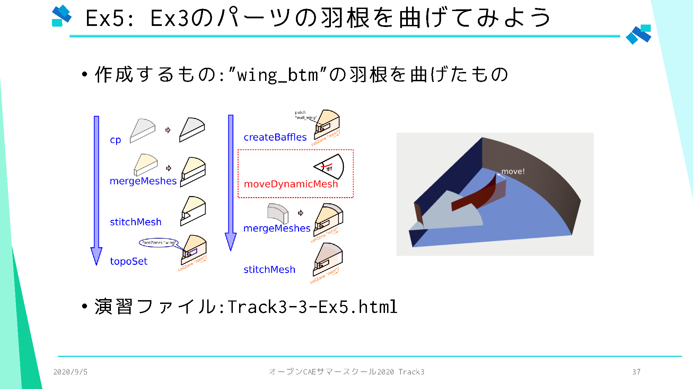
（2）一体もの（1つの連続メッシュ）の場合の対処法（今回の方法）
今回のようにメッシュが一体で作られている場合は、貼り合わせができないので、rotor の境界（r=35mm の円筒面）を一時的に固定壁にして変形させ、あとで元に戻す方法をとる。手順は次の4ステップ。
topoSet … rotor1 / rotor2
セルゾーンの境界面を faceZone（rotorBoundary）にする。createBaffles …
その面を一時的な固定壁パッチ rotorPin
に変換する。pointDisplacement の .*（既定）が
fixedValue (0 0 0) なので、rotorPin
は自動的に変位0で固定される。moveDynamicMesh …
羽根を変形させる。このとき rotor
境界（rotorPin）は変位0で固定されているので、変形は rotor
内側だけに閉じ込められる。stitchMesh …
変形後、rotorPin（壁）を内部面に戻す。これで
r=35
の壁が消え、元の一体もの（壁のない連続メッシュ）に戻る。ただし形状は変形済み。実際のコマンドは次の通り（master_curve_of13 の
Allrun に記載）。
# 1. 半径3 mmのシャフト面をdefaultFacesからshaftへ分離
topoSet -dict system/topoSetDict.shaft
createPatch -dict system/createPatchDict.shaft
# 2-3. rotor境界(r=35)を一時的に固定壁(rotorPin)化
topoSet -dict system/topoSetDict.rotorpin
createBaffles -overwrite
# 4. 羽根を変形(rotorPinは変位0で固定)
rm -rf 0 && cp -r 0.orig 0
moveDynamicMesh
# 5. 固定壁を内部面へ戻す(壁を消し、元の一体ものメッシュに戻す)
stitchMesh -latestTime "((rotorPin_master rotorPin_slave))"system/topoSetDict.shaft は defaultFaces
のうち半径3
mmの円筒面を選択し、system/createPatchDict.shaft
は選択した面を type wall の shaft
パッチへ変更する。形状やセルは変更せず、境界名だけを分離している。1/6セクターでは
shaft
が4,512面になり、変形・結合後もこの境界名が保持される。
createBaffles で作る rotorPin_master /
rotorPin_slave は
type wall（両面とも壁）なので、そのままでは r=35
で流れが遮られてしまう。そこで変形が終わったら stitchMesh
で両パッチを内部面へ結合し、壁を消して元の状態に戻すのがポイントである。
固定した面（rotorPin）は、下図でピンク色に示した rotor1
/ rotor2
セルゾーンの外周表面全体である。具体的には、
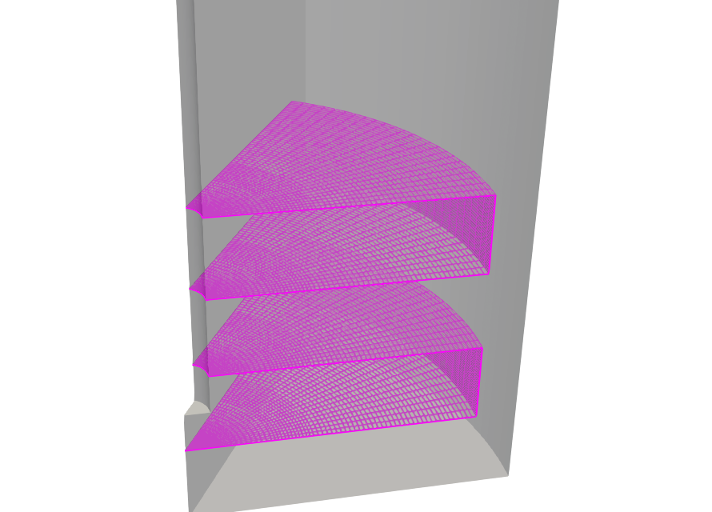
この閉じた表面を変位0で固定するため、rotor の内側（羽根と境界の間）だけが変形を吸収し、rotor の外側は一切動かない。
これにより、変形は rotor
内部（羽根と境界の間）だけに閉じ込められ、rotor
界面は円形を保ち、外側のメッシュは完全に静止する（実測で外側の変位0.000mm・界面の半径ずれ0.05mm、checkMesh
も Mesh OK）。
対処後（rotor境界を固定した場合）の変形過程は以下のようになる。羽根（ピンク色）は変形するが、回転領域（水色）とその外側のメッシュは動かず、rotor は円形を保っている（「対処前」アニメーションと見比べると違いが分かる）。
このアニメーションは
rotorPin（固定用の壁）が入ったままの状態である。変形が終わったら、前述の手順4のとおり
stitchMesh で rotorPin
の壁を内部面に戻し、壁のない一体もの（変形済み）のメッシュにする。
stitchMesh -latestTime "((rotorPin_master rotorPin_slave))"こうしてできた「壁のない・羽根が曲がった変形済みメッシュ」（master_curve_of13
の最終時刻
1/）が、次のフルモデル組み立ての基準セクターになる。以上のpin→変形→壁戻しの一連の処理は
master_curve_of13/Allrun にまとめてある。
ESI版OpenFOAM（v2512など）には master_curve_of2512
フォルダにv2512用ケースがある。構文がいくつか異なる（topoSet
のfaceSet削除は subtract、stitchMesh は
stitchMesh -perfect rotorPin_master rotorPin_slave
の2引数形式、最終時刻への適用は startFrom latestTime
への切り替えが必要）。./Allrun で羽根の変形（先端4
mm）・rotor固定・stitch（壁戻し）まで一括実行でき、Foundation版と同じく
Mesh OK の一体メッシュになる。
ここまでで作った変形済みの 1/6
セクター（60°）を、60°ずつ回転コピーして6個結合すると、全周（360°）の撹拌槽フルモデルになる。作業フォルダは
data/002_Stirrer/sample/mesh/fullmodel_of13。
基準セクターには、master_curve_of13 を
Allrun
で回した最終時刻（1/）の変形メッシュ（羽根が曲がり、rotor
境界は円形のまま、壁も無い一体もの）を使う。
. /opt/openfoam13/etc/bashrc先に master_curve_of13 を実行する。この処理で、半径3
mmの面を shaft
に変更し、rotor境界を固定した状態で羽根を曲げ、最後にrotor境界を内部面へ戻す。
cd data/002_Stirrer/sample/mesh/master_curve_of13
./Allrun計算後は 1/polyMesh/boundary に shaft
があることと、メッシュ品質を確認する。
grep -A6 '^[[:space:]]*shaft$' 1/polyMesh/boundary
checkMesh -latestTime今回の実行結果は、223,776セルがすべて六面体、shaft
は4,512面で、Mesh OK となった。
cd ../fullmodel_of13
SEC=../master_curve_of13/1/polyMeshSEC は、手順2で作成した変形済み1/6セクターの
polyMesh を指す。
rm -rf constant/polyMesh
cp -r "$SEC" constant/polyMeshこの時点では、フルモデル用ケースに0°の1/6セクターだけが入っている。
回転コピーして並べただけでは、隣り合うセクターの境目（放射面）はつながらず、メッシュは6個のブロックが接触して並んでいるだけの状態になる。あとで
stitchMesh
を使ってこの境目を貼り合わせ、セクター間が面でつながった1つの連続メッシュにする。
stitchMesh
は「2つの名前付きパッチどうし」を貼り合わせる。ところが結合直後は、放射面（θ=0°
と θ=60° の2枚）は外周壁・天面・底面といっしょに
defaultFaces
に混ざっていて、そのままでは指定できない。そこで先に、基準セクターの両放射面を
topoSet＋createPatch で専用パッチ
side_0deg / side_60deg
として切り出しておく。
topoSet -dict system/topoSetDict.sides
createPatch -dict system/createPatchDict.sides -overwritetopoSetDict.sides は、defaultFaces
に限定してから面の法線でθ=0°面（法線
(0 -1 0)）とθ=60°面（法線
(-sin60 cos60 0)）を選ぶ。createPatchDict.sides
は、それを side_0deg / side_60deg
という名前のパッチにする。1/6セクターでは、それぞれ8,784面が切り出される。回転コピー前に付けておくと、6個すべてが同じ側面パッチを持つ。
60°から300°までの5個を sec1〜sec5
に作り、それぞれ60°ずつ回す。通常は側面パッチ付きの
constant/polyMesh をコピーして transformPoints
で回せばよい。
for k in 1 2 3 4 5; do
ang=$((k * 60))
mkdir -p sec$k/constant sec$k/system
cp -r constant/polyMesh sec$k/constant/polyMesh
cp system/controlDict sec$k/system/
transformPoints -case sec$k "Rz=$ang"
done基準セクターを含め、0°・60°・120°・180°・240°・300°の6セクターがそろう。
補足（Windows/WSL の
/mnt/f= drvfs で実行する場合）: drvfs 上では、cpでコピーしたpolyMesh/pointsが読み取り専用になり、transformPointsによる「その場上書き」が失敗する（回転が反映されず、rmも Permission denied になる）。このためfullmodel_of13/AllrunではtransformPointsを使わず、回転で変わらないトポロジ系ファイル（faces・ownerなど）はコピーで流用し、回転後のpointsだけを別ファイルとして新規書き出しする（system/rotatePointsTo.py）。新規作成なら drvfs でも確実に書けるため、6セクターすべてが確実に回転する。Linux ネイティブFS上ではこの回避策は不要で、上のtransformPoints版でよい。
mergeMeshes -addCases '("sec1" "sec2" "sec3" "sec4" "sec5")'mergeMeshes
は、0°の基準セクターへ5個の回転済みセクターを追加する。これにより、1,342,656セルの360°フルモデルが
constant/polyMesh
にできる。ただしこの時点ではまだ6個のブロックが接触して並んでいるだけで、checkMesh
すると
Number of regions: 6（互いに面でつながっていない6領域）になる。
隣り合うセクターの side_0deg と side_60deg
は幾何的にぴったり重なっている。stitchMesh
で両パッチを貼り合わせて内部面に戻すと、6個の境目が全部つながって
Number of regions: 1 の一体メッシュになる。
stitchMesh -tol 1e-3 '((side_0deg side_60deg))'-tol
は一致点をマージする許容量（局所辺長に対する相対値）で、既定は
1e-4。回転コピー時のわずかな数値誤差で接合線に微小なスリバー面ができ非直交エラーになることがあるため、ここでは少し緩めの
1e-3 を使う。実行すると
Source/target coverage = 1/1（両側とも完全に貼り合わさった）となり、side_0deg
/ side_60deg
は境界から消えて内部面になる。結合後、一時セクターは削除してよい（rm -rf sec1 sec2 sec3 sec4 sec5）。
checkMesh今回の実行結果は、1,342,656セルがすべて六面体、Number of regions: 1、非直交
Max 49°・スキュネス 0.79 で Mesh OK
となった。セクター間がつながった、計算にも使える1つの連続メッシュである。
以上の手順（4〜9）は fullmodel_of13/Allrun
にまとめてあり、./Allrun
で一括実行できる（作業はすべてこのフォルダ内で完結する）。
post.foam
をParaViewで開き、タンクを半透明にして羽根（赤）と仕切り板（緑）を表示する。曲がった羽根が全周に12枚並んでいることを確認する。
fullmodel_of13/Allrun
にまとめてある（./Allrun で再生成できる）。fullmodel_of2512
フォルダがある（先に mesh_of2512 →
master_curve_of2512 を実行してから
./Allrun）。Foundation版と同じく変形済みセクターから全周を組み立てる。v2512では
mergeMeshes が2ケースずつの逐次実行、stitchは
stitchMesh -perfect（点の完全一致が必要なため、θ=60°面の点をθ=0°面の+60°回転値へ厳密スナップしてから回転コピーする）など手順が異なる（詳細は同フォルダの
Allrun を参照）。結果はFoundation版と同じく
Number of regions: 1・Mesh OK
の連続メッシュになる。すべての形状をヘキサメッシュだけで作成するのは、CADソフトからは難しい場面が多い。それでもヘキサメッシュをどうしても使いたい場面がある場合は、次のことを覚えておくとよい。
1つの六面体ブロックは、節点（頂点・辺・面）を動かすだけで、元の立方体と「位相的に同相（homeomorphic）」な形状であれば作成できる。位相幾何学では、切ったり貼ったりせずに連続的に変形して移り合える形どうしを「同相」という。立方体と球は同相なので、下図のように立方体の8つの頂点・6つの面を球面へ写すだけで、六面体1個で球を表現できる（メッシュのつながり方＝トポロジは立方体のまま）。逆に、ドーナツ（穴あき）のように立方体と同相でない形状は、1個の六面体ブロックでは作れない。
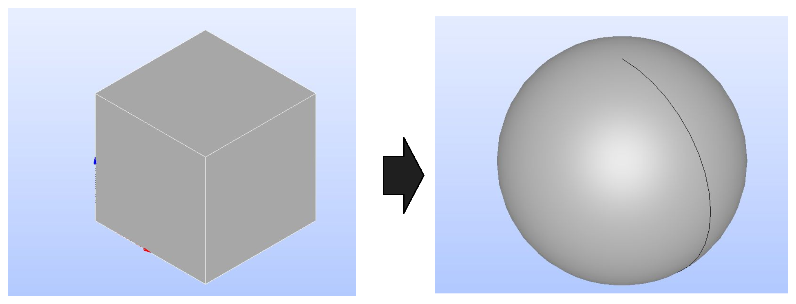
これをさらに3次元的に考えると、立方体状のブロックを球面へフィットさせて、球体まわりのヘキサメッシュを作成できる。さらに、その球面を
dynamicMesh
の節点移動で対象形状へフィットさせれば、たとえばバスケットボール（表面の溝つき）まわりのヘキサメッシュまで作成できる（そんな機会はないかもしれないが、考え方の参考として）。
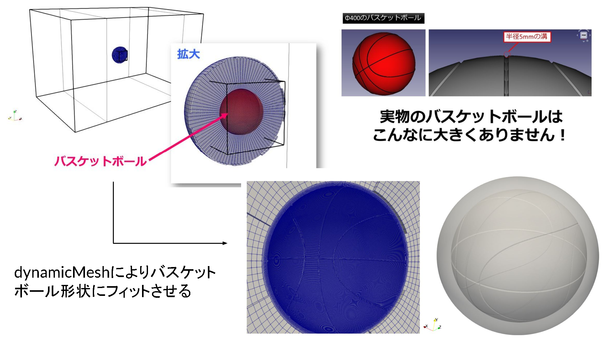
軸まわりに回転対称な形状は、断面を2次元スケッチで描いて回転押し出しすれば、きれいなヘキサメッシュになる。断面をブロックに分けておけば、回転方向にそのまま六面体が並ぶ。
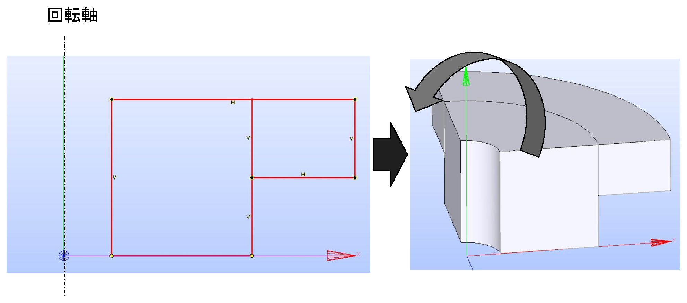
一方向に断面が変わらない形状は、断面を2次元スケッチで描いて押し出すのが最も簡単で確実である。円のような断面も、扇形＋中央の四角のブロックに分割しておけば六面体で押し出せる。
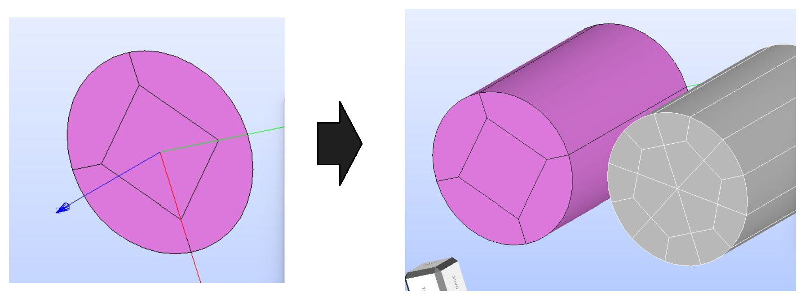
まとめると、「立方体と同相な形」「回転押し出しで作れる形」「押し出しで作れる形」に持ち込めるかどうかが、ヘキサメッシュを作れるかどうかの見極めどころになる。複雑な形状は、これらのブロックに分割（Partition）できる形へ落とし込んでいくのがコツである。
ここまで「ヘキサメッシュをつくるコツ」を見てきたが、計算の精度を決めるのはメッシュの種類（ヘキサ／テトラ）だけではない。対流項をどの離散化スキームで解くか、そしてメッシュが流れに沿っているかも同じくらい効く。ここでは単純な移流問題でそれを確かめ、「本当にヘキサメッシュでないといけないか」を考える材料にする。
題材は下図の形状（幅100 × 高さ50）。中央にダイヤ型のブロックを置き、左右のブロックと分割数をそろえてヘキサメッシュにしている。この中央部でメッシュが流れ方向に対して斜めになる。
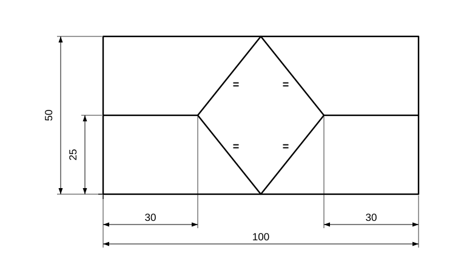
移流方程式は、2次元では次の形をしている（\(\mathbf{u}=(u,v)\) は流速）。
\[ \frac{\partial T}{\partial t} + u\,\frac{\partial T}{\partial x} + v\,\frac{\partial T}{\partial y} = 0 \tag{1} \]
このうち、\(\partial T/\partial t\)
は時間変化項、\(u\,\partial
T/\partial x + v\,\partial T/\partial y\)（流速 ×
空間微分、ベクトルで書けば \(\mathbf{u}\cdot\nabla
T\)）が対流項（移流項）である。OpenFOAMではこの対流項が
div(phi,T) にあたり、system/fvSchemes の
divSchemes
で離散化スキームを指定する。この節で「対流項の離散化スキームを変える」と言っているのは、この項をどう離散化するかを変える、という意味である。
今回は流れが \(x\) 方向のみ（\(\mathbf{u}=(u,\,0)\)、すなわち \(v=0\)）なので、式(1)は
\[ \frac{\partial T}{\partial t} + u\,\frac{\partial T}{\partial x} = 0 \tag{2} \]
に簡約される。厳密解は \(T(x,t) = T(x - ut,\, 0)\)、つまり分布の形を保ったまま伝搬するはず。しかし実際は対流項の離散化スキームで結果が大きく変わる。
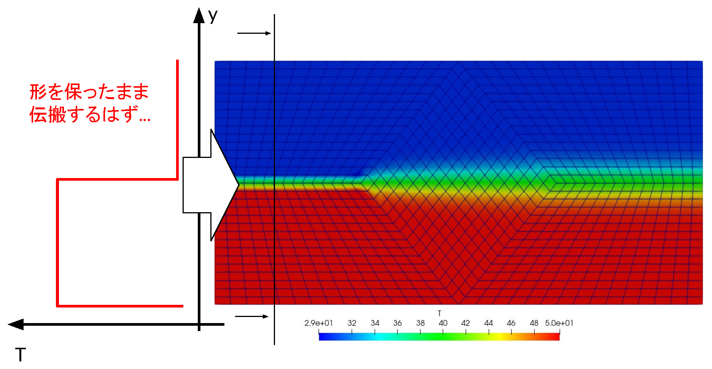
今回は上図のような2次元領域で、上側入口を30℃・下側入口を50℃として右へ流す（拡散なしの純移流、DT=0）。理想的には上下の温度差（y=25の界面）がシャープなまま出口まで運ばれるはずである。
ここで対象にするのは、移流方程式の対流項（下式の \((2)\) の部分）。この対流項をどう離散化するかで挙動が変わる。
\[ \underbrace{\frac{\partial T}{\partial t}}_{(1)} \;+\; \underbrace{u\,\frac{\partial T}{\partial x} + v\,\frac{\partial T}{\partial y}}_{(2)} \;=\; 0 \]
ここで \((1)\)
は時間変化項、\((2)\)
が対流項（＝
div(phi,T)。以下で変えるのはこの項のスキーム）。
ざっくり、「安定性」と「精度」はトレードオフと覚えておくとよい。安定性を取ると数値拡散（解がなまる）が生じやすく、精度を取ると数値振動が起こりやすい。
同じ移流問題を、system/fvSchemes の
divSchemes にある対流項スキーム div(phi,T)
だけ変えて計算した結果が下図（青=30℃、赤=50℃）。左上から時計回りに、1次風上（upwind）・2次中心差分（linear）・TVD（vanLeer）・2次風上（linearUpwind）。
// system/fvSchemes
divSchemes
{
default none;
div(phi,T) Gauss upwind; // ← ここを linear / linearUpwind grad(T) / vanLeer などに変える
}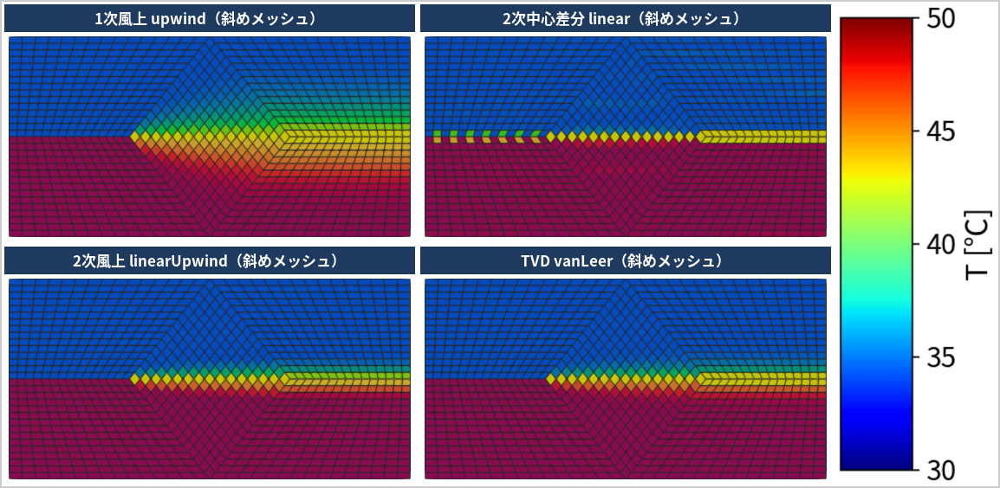
T は 30〜50
に収まり振動はしない）。T が約22〜58℃）。見てほしい点: 上の4枚とも、左半分（格子が流れに整列）では界面がシャープで、右半分（V字の斜め格子）でなまっている。
わかること: なまりの主因はスキームの数値拡散ではなく、格子が流れに斜交して生じる偽拡散（false diffusion）である。
確かめ: 同じ linearUpwind
を、格子を流れに整列させた blockMesh
で解くと、界面はシャープなまま出口まで届く（下図）。→
精度は「スキーム」だけでなく「格子を流れに沿わせること」でも大きく変わる。
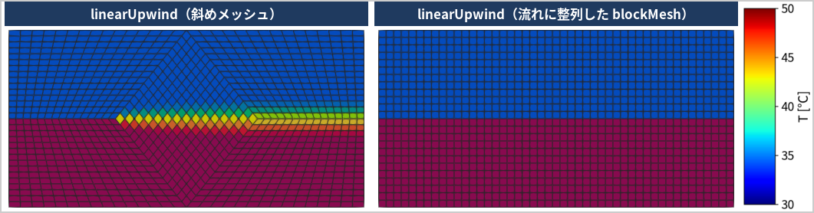
精度を決めるのは、メッシュの種類（ヘキサ／テトラ）だけではなく、
も同じくらい効く。ヘキサメッシュ化に大きな手間をかける前に、「その形状で本当にヘキサが必要か」「流れに沿ったメッシュにできるか」「スキームで十分な精度が出せるか」をあわせて考えると、労力に見合った良いメッシュ・良い計算にたどり着きやすい。
移流スキーム比較のケースは data/000_ex/
以下にある（それぞれ ./Allrun
で再現でき、div(phi,T) だけが異なる）。ESI版
v2512（run_of2512_*）と Foundation版 OpenFOAM
13（run_of13_*）の両方を用意している（対応するOpenFOAM環境を読み込んでから
./Allrun）。
フォルダ（run_of2512_* / run_of13_*） |
内容 |
|---|---|
..._upwind |
1次風上差分（Gauss upwind）／斜めメッシュ |
..._linear |
2次中心差分（Gauss linear）／斜めメッシュ |
..._linearUpwind |
2次風上（Gauss linearUpwind grad(T)）／斜めメッシュ |
..._vanLeer |
TVD（Gauss vanLeer）／斜めメッシュ |
..._blockMesh_linearUpwind |
2次風上（linearUpwind）／流れに整列した
blockMesh（斜めメッシュとの比較用、セル数はほぼ同じ） |
離散化スキームについては、以下の記事も参考になる。